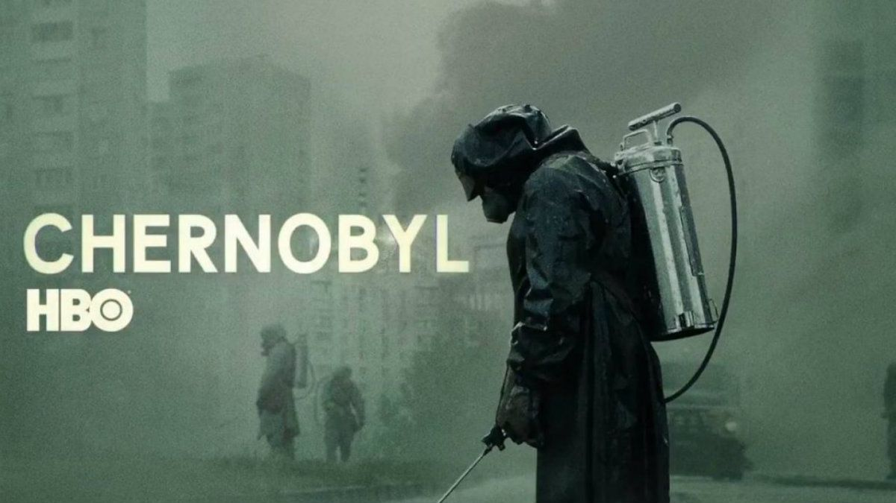
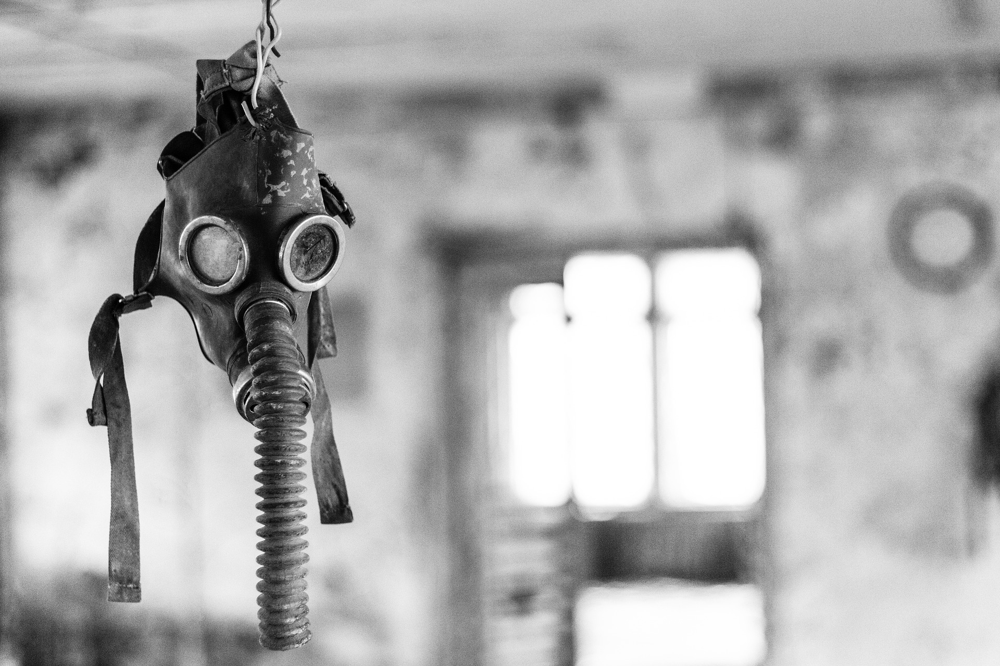
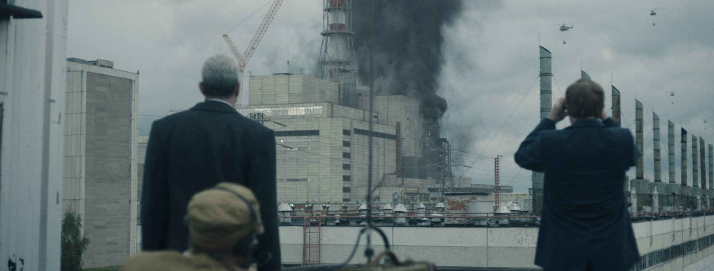
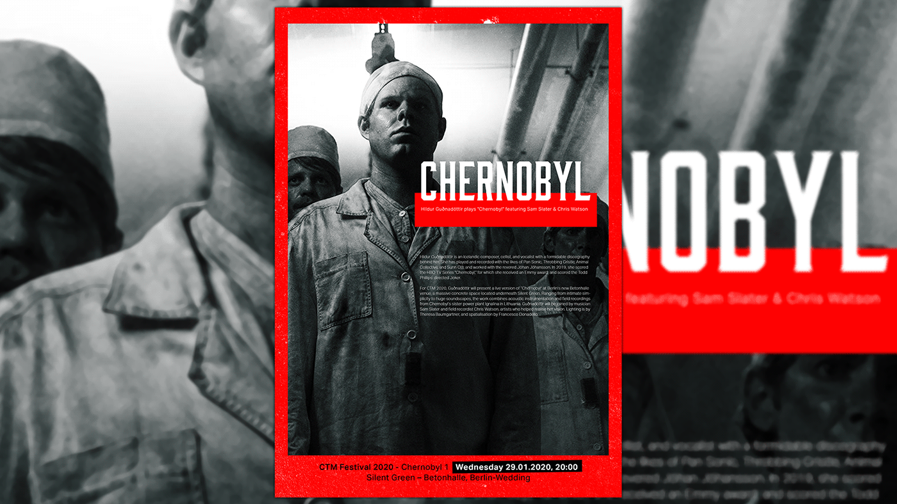
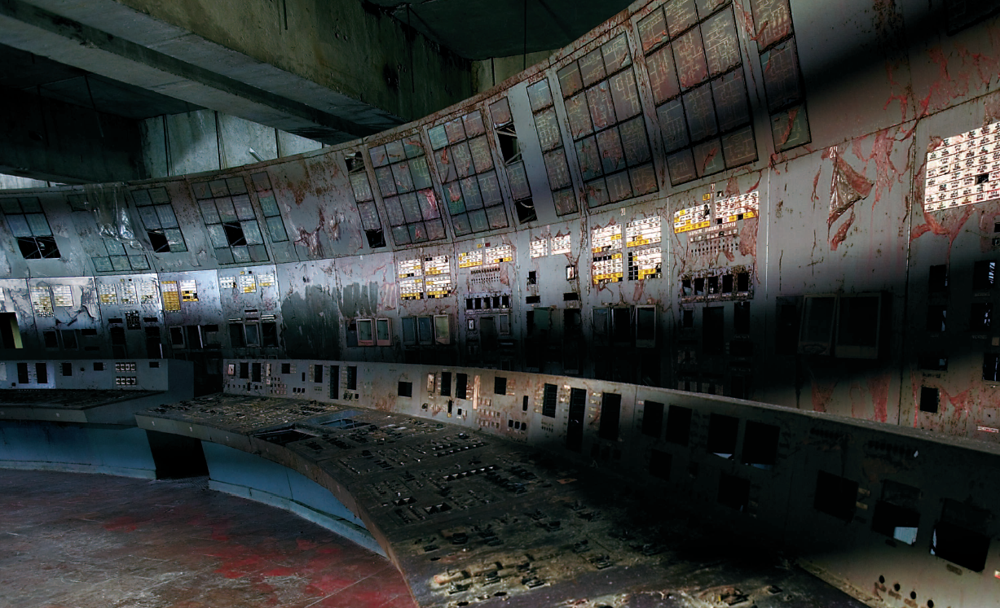

Chernobyl: 1:23:45

El 26 de abril de 1986, a las 1:23:40 de la madrugada, el reactor número 4 de la central nuclear Vladímir Ilich Lenin, ubicada a 3 km de la ciudad de Prípyat (URSS) a 18 km de la ciudad de Chernóbil, durante una prueba de seguridad en la que no siguieron los protocolos establecidos comenzó a arder provocando lo que acabaría siendo el peor desastre nuclear de la historia. La explosión del propio reactor nuclear dispersó en la atmósfera gran cantidad de material radioactivo (uranio, plutonio, yodo, estroncio, cesio) que contaminaron un área de 142.000 kilómetros cuadrados en el norte de Ucrania, el sur de Bielorrusia y la región rusa de Briansk. Además, los bloques de grafito utilizados como protección se incendiaron a alta temperatura cuando el aire penetró en al núcleo del reactor, lo que contribuyó a la emisión de materiales radiactivos al medio ambiente.
El silencio con que la extinta URSS trató el incidente y el oscurantismo que cubrió todo el incidente trató de ocultar la mayor catástrofe nuclear de la historia- algo a todas luces imposible dada la magnitud del problema-tratando de controlar la información y dar su propia versión sobre los hechos.
Esta es el relato del mayor desastre nuclear de la historia y de sus protagonistas. Un accidente que cambiaría para siempre el mundo.
Link to chapter 1 (VO English)
Por favor, mantén la calma

Siete horas después de la explosión, Uliana Khomyuk detecta un aumento en los niveles de radiación en Minsk. Cuando sus preocupaciones son desestimadas por las autoridades locales, se dirige a Chernóbil, la fuente probable. En el sobrecargado hospital de Prípiat, Liudmila descubre que Vasili y los otros pacientes del síndrome han sido evacuados a Moscú. En Moscú, Legásov le explica a Mijaíl Gorbachov que la situación es más grave de lo que se ha informado y es enviado a Chernóbil con un escéptico Borís Shcherbina. Desde un helicóptero, Legásov señala los restos de grafito y el brillo azul de la radiación ionizante, lo que indica que el núcleo está expuesto. Shcherbina se enfrenta a Briujánov y Fomín, que acusan a Legásov de desinformación, pero el general Vladímir Pikálov tiene lecturas dosimétricas de alto rango que prueban que Legásov tiene razón. Legásov instruye a los militares para que repriman el fuego con arena y boro, lo que resulta arriesgado. A medida que la noticia del incidente se extiende, Prípiat es finalmente evacuada. Al llegar, Khomyuk le advierte a Legásov y a Shcherbina que si el núcleo fundido entra en contacto con el agua del sótano inundado, se producirá una destructiva explosión de vapor. Una misión letal está autorizada para drenar el agua y la forman los trabajadores voluntarios Ananenko, Bezpílov y Barínov.
Link to chapter 2 (VO English)
Abierta de par en par, Oh Tierra

El sótano ha sido drenado con éxito, pero ha comenzado una Fusión del núcleo que amenaza con contaminar el agua subterránea. Shcherbina y Legásov convencen a Gorbachov de que se necesita un intercambiador de calor bajo la planta, para lo cual Mijaíl Shchádov recluta a mineros de carbón de Tula, liderados por Glújov, para excavar un túnel en condiciones extremadamente adversas. Mientras tanto, Shcherbina le advierte a Legásov que están siendo vigilados por la KGB. Legásov envía a Khomyuk a un hospital de Moscú, donde encuentra que Diátlov no coopera, pero se entera por los moribundos Toptunov y Aleksandr Akímov que el reactor explotó después de que Akímov iniciara un apagado de emergencia, un escenario que se creía imposible. Mediante un soborno para entrar al hospital y mintiendo sobre su embarazo, Liudmila puede visitar a Vasili, pero desobedece las órdenes al permanecer con su esposo más tiempo del que se le ordena. Durante la visita de Khomyuk al hospital, ella es testigo de cómo Vasili toca a Liudmila. Al darse cuenta de que Liudmila está embarazada, Khomyuk amenaza con informar de todo al Comité y es arrestada por agentes de la KGB. Es encarcelada, pero Legásov arregla su liberación. Mientras Shcherbina y Legásov informan al Comité Ejecutivo Central de sus planes de descontaminación que requieren la movilización masiva de los liquidadores, Liudmila se encuentra entre los familiares de otras víctimas fallecidas por el síndrome mientras Vasili, en un ataúd de plomo sellado, es sepultado en una fosa común de hormigón.
Link to chapter 3 (VO English)
La felicidad de toda la humanidad

Los residentes son evacuados de la amplia Zona de Exclusión de Chernóbil y comienzan las operaciones de descontaminación. El recluta civil Pável es asignado con el veterano de la guerra soviético-afgana Bachó para patrullar la zona y eliminar a los animales abandonados debido a la contaminación radiactiva. El jefe de los liquidadores, el general Nikolái Tarakánov, despliega vehículos lunares para limpiar el techo de la planta con la finalidad de construir un sarcófago. Después que un robot de la policía de Alemania Occidental falla casi instantáneamente a causa de los altos niveles de radiación, Tarakánov se ve obligado a enlistar a 3828 liquidadores para realizar la limpieza de forma manual, permitiéndosele solo noventa segundos a cada uno. Khomyuk investiga los archivos de Moscú y confronta a un convaleciente Diátlov, quien sabe que el Gobierno no está interesado en la verdad. Encontrándose lejos de los espías de la KGB, Shcherbina y Legásov informan a Khomyuk que ambos deben testificar como expertos en el juicio de Diátlov, Briujánov y Fomín, y Legásov acudirá ante el Organismo Internacional de Energía Atómica (OIEA). Khomyuk revela un artículo concerniente a un incidente idéntico en la Planta de Energía Nuclear de Leningrado en 1975, ocultado por la KGB, y les informa de que Liudmila dio a luz una niña que murió pocas horas después, a causa del envenenamiento por radiación. Khomyuk insta a Legásov a decir toda la verdad ante la OIEA, mientras Shcherbina recomienda precaución para evitar represalias del Gobierno.
Link to chapter 4 (VO English)
Víchnaya Pámyat

Después del testimonio de Legásov en la OIEA en Viena, en el cual miente, Diátlov, Briujánov y Fomín son puestos en juicio en la abandonada ciudad de Chernóbil. Shcherbina es el primero en testificar, explicando el funcionamiento general de una planta de energía nuclear. Khomyuk y Legásov se enfocan en los eventos que desencadenaron el accidente, basándose en entrevistas con quienes estuvieron presentes en la sala de control. Imágenes en retrospectiva muestran que, debido al retraso de diez horas en una prueba de seguridad y a la impaciencia de Diátlov por realizarla, el reactor estalló, experimentando un excesivo alza de potencia. Akímov activó el apagado de emergencia, pero una falla de diseño en las barras de control elevaron la potencia a un nivel diez veces superior al límite del reactor antes de su explosión. Legásov revela la información oculta respecto a la planta de Leningrado, admitiendo que mintió en su anterior testimonio entregado en Viena. Luego, es arrestado por la KGB e informado de que su testimonio será ignorado por la prensa; además, se le prohíbe hablarle a cualquiera sobre Chernóbil, sin recibir crédito alguno por su labor realizada ante el desastre, y sin posibilidades de volver a trabajar. El final muestra fotografías y vídeos de archivo del verdadero Legásov y los demás protagonistas, revelando sus destinos, así como también las continuas consecuencias del accidente.